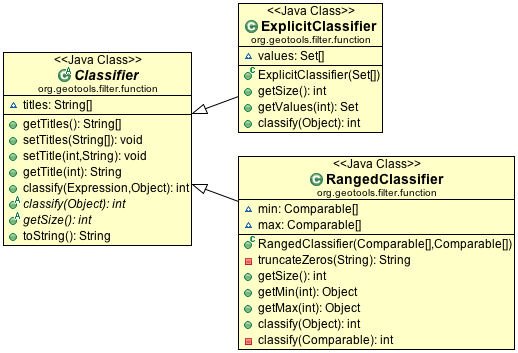

Classifier¶
A classifier captures a group of values (either expressed explicitly or as a range) providing a title to each group.
You can consider a Classifier as a set of groups into which you can sort your data:
ExplicitClassifier
Definition of explicit classifier by hand:
Set[] zones = new Set[3]; // urban commercial or residencial zones[0] = new HashSet(Arrays.asList(new String[] { "Zone 1", "Zone 2", })); // municipal or crown parkland zones[1] = new HashSet(Arrays.asList(new String[] { "Zone 4", "Crown 2", })); // industrial zones[2] = new HashSet(Arrays.asList(new String[] { "Zone 3" })); Classifier landuse = new ExplicitClassifier(zones); landuse.setTitle(0, "urban"); landuse.setTitle(1, "park"); landuse.setTitle(2, "industrial");
RangedClassifier
Definition of a ranged classifier by hand:
Comparable min[] = new Comparable[25]; Comparable max[] = new Comparable[25]; for (int i = 0; i < 25; i++) { min[i] = (char) ('A' + i); max[i] = (char) ('B' + i); } Classifier alphabetical = new RangedClassifier(min, max);
As shown above each group can be provided with a title; these titles will be used in the generated styles:
groups.setTitle(0, "Group A"); groups.setTitle(1, "Group B");
You can also automatically generate a Classifier from a FeatureCollection.
The following “classifier” functions are available:
- EqualInterval - classifier where each group represents the same sized range
- Jenks - generate the Jenks’ Natural Breaks classification
- Quantile - classifier with an even number of items in each group
- StandardDeviation - generated using the standard deviation method
- UniqueInterval - variation of EqualInterval that takes into account unique values
Here is the code example with quantile:
FilterFactory2 ff = CommonFactoryFinder.getFilterFactory2(); Function classify = ff.function("Quantile", ff.property("name"), ff.literal(2)); Classifier groups = (Classifier) classify.evaluate(collection);
Example using EqualInterval to break down a continuous range of values (such as height):
FilterFactory2 ff = CommonFactoryFinder.getFilterFactory2(); Function classify = ff.function("EqualInterval", ff.property("height"), ff.literal(5)); // this will create a nice smooth series of intervals suitable for presentation // with: // - sequential color palette to make each height blend smoothly into the next // - diverging color palettes if you want to make higher and lower areas stand out more Classifier height = (Classifier) classify.evaluate(collection);
Example using Quantile to break up a list of items (such as zones):
FilterFactory2 ff = CommonFactoryFinder.getFilterFactory2(); Function classify = ff.function("Quantile", ff.property("zone"), ff.literal(2)); // Zones assigned by a municipal board do not have an intrinsic numerical // meaning making them suitable for display using: // - qualitative palette where each zone would have the same visual impact Classifier groups = (Classifier) classify.evaluate(collection);